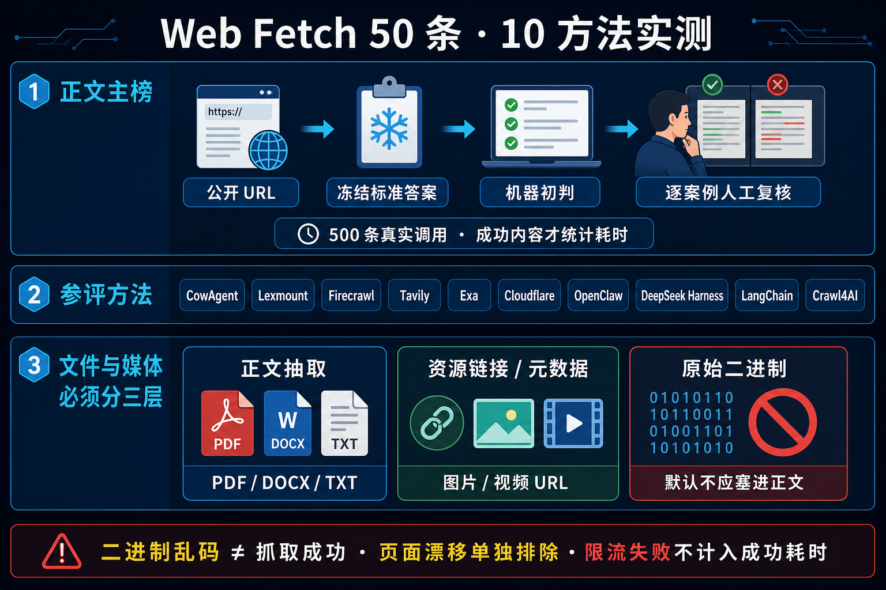

正式评测报告 · Web Fetch
Web Fetch 文件与媒体能力评测集
比较“给定公开 URL，直接返回正确、完整、可供 Agent 使用的正文”这一项能力。每条请求、失败响应、标准答案、指标与环境信息都可下钻核验。
一图读懂新版评测

调用记录
54
完整保存的真实调用次数
参评方法
9
本次实际运行的方法
请求成功
68.5%
只代表接口返回成功
机器内容初判
51.9%
按冻结标准答案初判通过
一图读懂：如何证明“抓到了正确正文”
1 · 题目
相同公开 URL
静态页、长文、技术文档、JS 渲染、PDF、重定向等多种案例。
2 · 标准答案
先标注再评分
冻结参考正文、必需事实、错误页标记与人工检查清单。
3 · 真实调用
保存完整输出
供应商输出逐字落盘，并用 SHA-256 防止预览与原文不一致。
4 · 机器初判
四道确定性规则
显著标记、最小长度、全部事实组、无错误页标记。
5 · 人工复核
最终判定由人确认
并排核对标准答案与输出，保存或导出复核 JSON。
特殊案例：JS 表示正文需执行 JavaScript 后才出现；PDF 表示必须抽取论文文字；重定向表示客户端跟随 HTTP 3xx 的 Location 并返回最终页正文，不是给出一个可点击链接。
提供方比较
请求成功与机器内容初判分开统计；P50/P95 只使用“请求成功且机器内容初判通过”的有效调用，避免很快返回空壳或错误页反而获得速度优势。
| 方法 | 结果分组 | 调用次数 | 请求成功率 | 机器内容初判通过率 | 有效 P50 | 有效 P95 | 失败数 | 超时越界 |
|---|---|---|---|---|---|---|---|---|
| cowagent-built-in cowagent_builtin | 可读正文 | 6 | 66.7% | 66.7% | 2,298 ms | 3,833 ms | 2 | 0 |
| crawl4ai crawl4ai | 可读正文 | 6 | 33.3% | 66.7% | 4,185 ms | 30,201 ms | 4 | 1 |
| deepseek-harness-built-in deepseek_harness_builtin | 可读正文 | 6 | 33.3% | 50.0% | 1,639 ms | 1,639 ms | 5 | 0 |
| exa exa_contents | 可读正文 | 6 | 50.0% | 66.7% | 2,774 ms | 3,438 ms | 4 | 0 |
| firecrawl firecrawl | 可读正文 | 6 | 66.7% | 100.0% | 4,553 ms | 5,342 ms | 2 | 0 |
| langchain-webbase langchain_webbase | 可读正文 | 6 | 100.0% | 66.7% | 2,671 ms | 3,969 ms | 2 | 0 |
| lexmount-global lexmount | 可读正文 | 6 | 100.0% | 66.7% | 2,057 ms | 2,627 ms | 2 | 0 |
| openclaw-built-in openclaw_builtin | 可读正文 | 6 | 100.0% | 66.7% | 1,873 ms | 5,484 ms | 2 | 0 |
| tavily tavily_extract | 可读正文 | 6 | 66.7% | 66.7% | 2,188 ms | 2,394 ms | 3 | 0 |